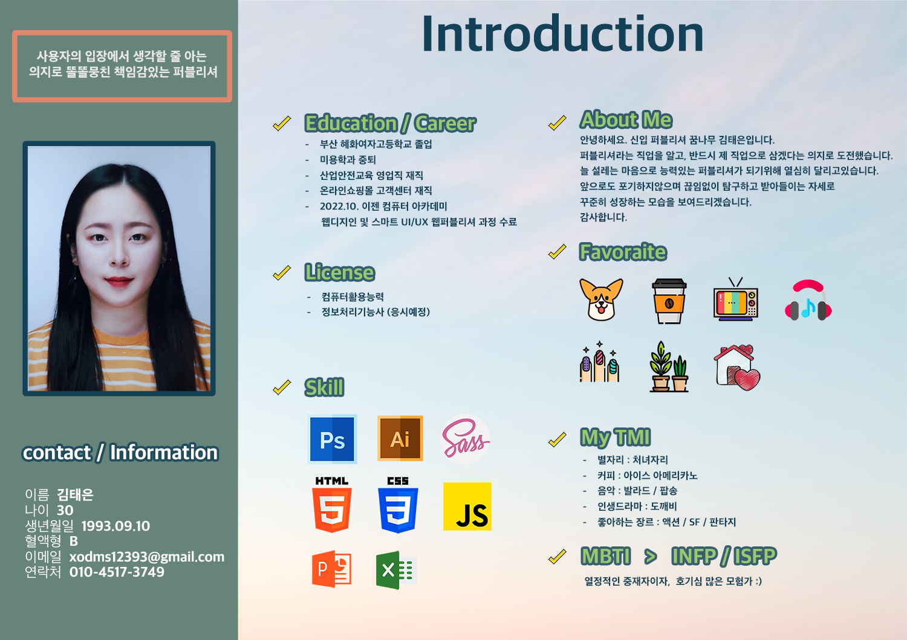

- Name : 김태은
- Birth : 1993. 09. 10
- Address : 서울시 강서구 마곡동
- Phone : 010-4517-3749
- Email : xodms12393@gmail.com
로딩중...
Kim Tae Eun
CREATIVE PUBLISHER
큰 나무로 성장할 준비가 되어있는 웹퍼블리셔 김태은 입니다.
꾸준히 공부하는 자세로 탄탄한 시멘틱 웹사이트를 구축하기위해
항상 노력하겠습니다.
Scroll↓
스크롤바를 내리면 작품을 감상할 수 있습니다.
ABOUT ME
VISION
팀에 잘 스며들어 제 역할을 해내고 팀의 시너지를 올려 줄 수 있는 퍼블리셔가 되고싶습니다
HTML과 CSS를 깔끔하게 다루며 탄탄한 작업을 하는 트렌디한 퍼블리셔가 되는것이 저의 목표입니다.
지인의 추천으로 퍼블리셔에 도전하게 되었는데 퍼블리싱 작업에 대해 배우고 작업물을 완성함에 재미를 느꼈고,
더욱 다양한 방향의 작업을 할 수 있는 사람이 되고싶다는 생각을 하게 되었습니다.
꾸준히 탐구하며 받아들이는 자세로 성장하는 퍼블리셔가 되겠습니다.
WHAT CAN I DO?
'탄탄한 코딩이 좋은 결과를 만든다' 는 마음으로 매일 노력하고 있습니다.
HTML5 & CSS3 시멘틱 페이지를 ZenCoding(EMMET), SCSS로 코딩할 수 있습니다.
클라이언트의 요구사항을 안정적으로 반영하는 코딩능력은 저의 최고의 장점 중 하나입니다.
JS 플러그인으로 필요한 기능을 직접 구현할 수 있는 Javascript/jQuery 로직구현이 가능합니다.
새로운 코딩기법을 배우는 것이 정말 즐겁습니다.

- ZenCoding(EMMET) & SCSS
- Javascript & jQuery 로직구현
- MVC 패턴의 페이지 구성
- RWD 반응형 웹디자인
- HTML5 DTD 유효성 검사 통과
- 웹접근성을 향상시킨 시멘틱 페이지
나에대한 주변인의 평가는 ?
-
기락
이야기를 잘들어주는 따뜻한사람하는일에 집중력이 좋고 열심히 하며 일의 마무리를 지을줄 아는 친구입니다.
흔들림없이 자기자리를 지켜주고 의지가 되어 줍니다. -
지이
포기하지않고 성취해내는 사람어렵다고 느껴도 포기라는 생각을 하지않고 부딪치며
문제의 해결방법을 먼저 생각하고 연구끝에 결국 해내는 강인한 친구입니다. -
가영
끈기가 매우 높은 친구처음 접하는 상황에도 끝까지 놓지않고 내것으로 만들어 항상 공부하고 열심히 노력하는 친구이며,
배움을 두려워 하지 않고 무슨일이든 절대 포기하지않는 친구입니다.
SKILL
탁월한 UX분석능력과 Emmet/Zencoding 활용
-
UX/UI 디자인
사용자의 Context와 Needs를 파악하고
Problem을 해결할 수 있는 Insight 도출 -
반응형 웹표준
시멘틱을 지향하는 HTML/CSS 작성능력 보유,
자바스크립트와 제이쿼리 기반의 로직 구현 가능
SASS 전처리기와 리액트 라이브러리 활용
-
Sass
협업 웹코딩의 필수 기술인 SCSS를 이용한
CSS 스타일링을 원활이 사용할 수 있습니다. -
React
국내 프론트엔드 시장의 대세 리액트 코드구현,
자바스크립트와 제이쿼리 기반의 로직구현 가능
ABILITY
젠코딩
HTML5
CSS
jQuery
웹기획
디자인
리더쉽
적극성
창조성
사교성
책임감
정직성
PORTFOLIO
GC지놈 (모바일페이지)
GC genome Project
반응형이 아닌 적응형 방식으로 작업하였습니다.
원페이지와 슬라이드 모두 에러없이 부드럽게 구동되도록 작업하였습니다.
작업프로그램 : Visual Studio Code, SCSS, JS
작업기여도 : 100% 개인 작업

양천구청 (메인페이지)
VISIT JEJU Project
기존 웹사이트의 개선사항을 찾아 메인페이지를 작업하였습니다.
라이브러리 없이 작업하기위해서 슬라이드를 직접 자바스크립트로
이전/다음, 재생/정지, 자동재생, 인디케이터로 작업하였습니다.
작업프로그램 : Visual Studio Code, SCSS, JS
작업기여도 : 100% 개인 작업

스타일난다 (메인페이지)
VISIT JEJU Project
기존 웹사이트의 개선사항을 찾아 메인페이지를 작업하였습니다.
슬라이드의 레이아웃이 틀어지지 않도록 작업하였으며,
간소화를 위해 반응형에서는 슬라이드가 노출되지 않도록 작업하였습니다.
작업프로그램 : Visual Studio Code, SCSS, JS
작업기여도 : 100% 개인 작업

비짓제주 (메인페이지)
VISIT JEJU Project
기존 웹사이트의 개선사항을 찾아 메인페이지를 작업하였습니다.
제주의 대표컬러를 사용하여 이미지를 강조하였으며,
사이드메뉴를 고정시켜 가독성이 좋아지도록 작업하였습니다.
작업프로그램 : Visual Studio Code, SCSS, JS
작업기여도 : 100% 개인 작업

컴포즈커피 (메인페이지)
COMPOSE COFFEE Project
기존 웹사이트의 개선사항을 찾아 메인페이지를 작업하였습니다.
컴포즈커피의 메인컬러로 브랜드 이미지를 강조하였으며,
간결한 레이아웃으로 컨텐츠를 보기 쉽게 배치하였습니다.
작업프로그램 : Visual Studio Code, SCSS, JS
작업기여도 : 100% 개인 작업

에버랜드 (메인페이지)
EVERLAND Project
기존 웹사이트의 개선사항을 찾아 메인페이지를 작업하였습니다.
사이드메뉴를 이용한 페이지 이동 전환이 매끄럽게 구동되도록 하고
간결한 레이아웃으로 전달하고자 하는 내용을 보기 쉽게 배치하였습니다.
작업프로그램 : Visual Studio Code, SCSS, JS
작업기여도 : 100% 개인 작업

제주도 추천여행
JEJU TRIP Site Design
제주도의 특징과 대표 관광명소를 소개한 원페이지 사이트로,
제주의 대표과일인 감귤컬러를 담은 로고마크를 사용하였으며
전체적으로 하늘과 바다를 닮은 컬러를 적용하여 제주도의 느낌을 주었습니다.
작업프로그램 : Visual Studio Code, SCSS, JS
작업기여도 : 100% 개인 작업

구현 슬라이드
-
좌우이동 슬라이드
슬라이드 구현에 적합한 태그와 flxe를 사용하여 UI를 구현하였습니다.
슬라이드 보기
또한 자바스크립트로 position:left값을 변화시켜 구동되도록 하였습니다. 플러그인 없이 직접 구현하였습니다. -
무한 슬라이드
이전·다음 기능을 가진 업그레이드 된 슬라이드로 편의성이 향상되었습니다.
슬라이드 보기
제이쿼리의 fadeIn(), fadeOut() API를 이용하여 구현하였습니다. 플러그인 없이 직접 구현하였습니다. -
자동실행 슬라이드
시작, 정지기능이 장착된 슬라이드로서 일관성있게 한쪽 방향으로 슬라이드가 노출되는 기능을 append() API와 콜백함수의 개념을 접목하여 구현하였습니다. 플러그인 없이 직접 구현하였습니다.
슬라이드 보기
코딩 프로젝트

CONTACT
귀사에 입사를 지원합니다.
저의 웹퍼블리싱 이야기 입니다.
질문을 선택하시면 답변을 보실수 있습니다.
- 1. html5의 가장 큰 특징은 무엇일까요? 화살표
-
HTML5는 HTML의 새로운 버전으로 Client Side Technology 기술의 중심이 되는 마크업 언어입니다. 기존의 HTML 만으로 웹 서비스를 구성하는 것이 불가능하였지만 HTML5 로 넘어오면서 클라이언트와 서버와의 통신이 가능하며 Active-X와 같은 플러그인을 사용하지 않고도 웹 서비스를 제공할 수 있을 정도로 많은 기능이 추가된 것이 가장 큰 특징입니다.
- 2. 웹표준, 접근성, 시멘틱을 설명하시오. 화살표
-
장애인, 고령자 등이 웹 사이트에서 제공하는 정보에 비장애인과 동등하게 접근하고 이해할 수 있도록 한것으로,
주로 시각장애인을 위한 사이트 해설이 원활히 될 수 있도록 작업하는것이 일반적입니다. - 3. 라이브러리 사용시 가장 큰 장점은? 화살표
-
다양한 애니메이션 효과를 손쉽게 적용시킬 수 있고,
슬라이드 구동에 라이브러리를 적용할 경우 작업에 소요되는 시간을 줄일 수 있습니다. - 4. .setInterval() 함수를 설명하시오. 화살표
-
슬라이드나 효과를 자동으로 실행시킬 때 사용하는 함수로
코드를 바로 실행하지않고 일정시간을 기다린 후 실행되도록 할때 사용할 수 있습니다. - 5. 미디어쿼리의 역할을 설명하시오. 화살표
-
반응형 웹사이트 작업에 사용되는 코드로
@media screen and (max-width:~px){}; 코드안에 구동 기기별 사이즈에 맞추어 페이지를 작업할 때 사용합니다.
더욱 궁금하신 점은 면접시 말씀드리겠습니다. 감사합니다 :)
본 페이지는 개인 포트폴리오용으로 제작되었으며, 상업적인 목적과 관련이 없음을 알려드립니다.